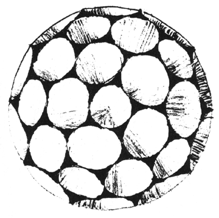

Fig. 541.30H Circular Cornucopia Assembled Around Interior Points to Form a Spherical Array. The tangent circles areas as well as concave triangle interstices constitute the total spherical surface.
Copyright © 1997 Estate of R. Buckminster Fuller